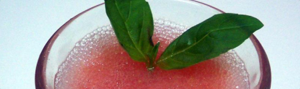

שאט וודקה ואבטיח
שאט וודקה אבטיח הוא משקה מושלם לערב שרבי. הוודקה תתן לכם את מלוא כובד האלהוכהול, והאבטיח עם המנטה את הקלילות של הקיץ. לחיים!
החומרים
100 גרם סוכר
600 גרם אבטיח חתוך לקוביות קפואות
100 גרם מיץ לימון
100 גרם מים
330 גרם וודקה
אופן ההכנה
1. שוקלים את הסוכר ישירות לקערת התרמומיקס וטוחנים 10 שניות במהירות 10
2. מוסיפים את קוביות האבטיח הקפואות וקוצצים 30 שניות במהירות 10
3. מוסיפים את מיץ הלימון, המים והוודקה ומערבבים 30 שניות במהירות 6
4. שומרים בקירור!
- 2/6 דפדפו בין התמונות


הצעת הגשה: מעל עלים טריים.